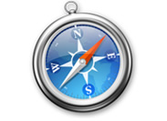

تحذير! كنت تستخدم خارج التاريخ مستعرض إنترنت إكسبلورر 6
هذا الموقع هو مبني على تقنيات حديثة ومتطورة لا يدعم إنترنت إكسبلورر الإصدار 6.
فمن بإصرار أوصى لك في اختيار وتحديد أي من المتصفحات الحديثة. انها مجانية وأيضا لن يستغرق سوى بضع دقائق.
 |
 |
 |
 |
 |
| Internet Explorer | Opera Browser | Mozilla Firefox | Google Chrome | Apple Safari |
لماذا يكون من الضروري تغيير متصفح IE6 إلى آخر؟
متصفح إنترنت إكسبلورر 6 ليست مجرد متصفح من النسخة القديمة ، فهو خارج نطاق متصفح حتى الآن ، متصفح من الجيل القديم!
فإنه لا يمكن إعطاء كل الاحتمالات التي يمكن أن يقدمها المتصفحات الحديثة ، وسرعة عملها عدة مرات أقل! إنترنت إكسبلورر 6
ليست قادرة على عرض معظم المواقع بشكل صحيح.
السلامةباستخدام لIE6 قد تكون خطيرة. الفيروسات والمحتالين ويمكن الحصول على جهاز الكمبيوتر الخاص بك سكرات الموت استخدام هذا المتصفح. |
فقط الحقائقأفرج عنه في العام 2001. الإصدارات Nr.7 وNr.8 أفرج عنهم في وقت لاحق والمتاحة. IE6النسخة المقبلة من المتوقع قريبا. |
Microsoftومايكروسوفت ، والمطور للإنترنت إكسبلورر 6 ، وأوقفت دعمها لIE6 وتوصي لتثبيت نسخة جديدة من متصفح مايكروسوفت. |